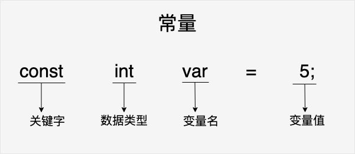
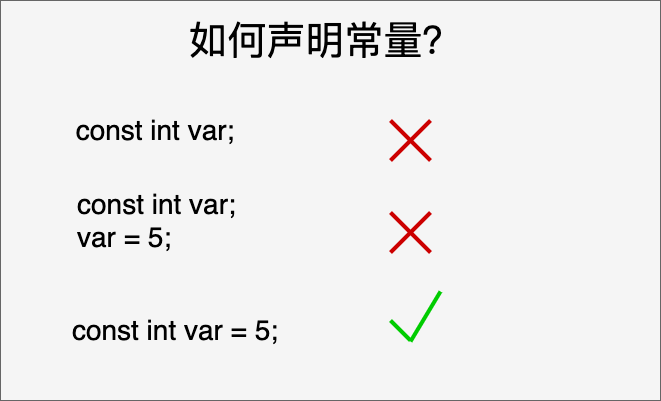

C 常量
常量是固定值，在程序执行期间不会改变。这些固定的值，又叫做字面量。
常量可以是任何的基本数据类型，比如整数常量、浮点常量、字符常量，或字符串字面值，也有枚举常量。
常量就像是常规的变量，只不过常量的值在定义后不能进行修改。
常量可以直接在代码中使用，也可以通过定义常量来使用。
整数常量
整数常量可以是十进制、八进制或十六进制的常量。前缀指定基数：0x 或 0X 表示十六进制，0 表示八进制，不带前缀则默认表示十进制。
整数常量也可以带一个后缀，后缀是 U 和 L 的组合，U 表示无符号整数（unsigned），L 表示长整数（long）。后缀可以是大写，也可以是小写，U 和 L 的顺序任意。
下面列举几个整数常量的实例：
212 /* 合法的 */ 215u /* 合法的 */ 0xFeeL /* 合法的 */ 078 /* 非法的：8 不是八进制的数字 */ 032UU /* 非法的：不能重复后缀 */
以下是各种类型的整数常量的实例：
85 /* 十进制 */ 0213 /* 八进制 */ 0x4b /* 十六进制 */ 30 /* 整数 */ 30u /* 无符号整数 */ 30l /* 长整数 */ 30ul /* 无符号长整数 */
整数常量可以带有一个后缀表示数据类型，例如：
实例
long myLong = 100000L;
unsigned int myUnsignedInt = 10U;
浮点常量
浮点常量由整数部分、小数点、小数部分和指数部分组成。您可以使用小数形式或者指数形式来表示浮点常量。
当使用小数形式表示时，必须包含整数部分、小数部分，或同时包含两者。当使用指数形式表示时， 必须包含小数点、指数，或同时包含两者。带符号的指数是用 e 或 E 引入的。
下面列举几个浮点常量的实例：
3.14159 /* 合法的 */ 314159E-5L /* 合法的 */ 510E /* 非法的：不完整的指数 */ 210f /* 非法的：没有小数或指数 */ .e55 /* 非法的：缺少整数或分数 */
浮点数常量可以带有一个后缀表示数据类型，例如：
实例
double myDouble = 3.14159;
字符常量
字符常量是括在单引号中，例如，'x' 可以存储在char类型的简单变量中。
字符常量可以是一个普通的字符（例如 'x'）、一个转义序列（例如 '\t'），或一个通用的字符（例如 '\u02C0'）。
在 C 中，有一些特定的字符，当它们前面有反斜杠时，它们就具有特殊的含义，被用来表示如换行符（\n）或制表符（\t）等。下表列出了一些这样的转义序列码：
| 转义序列 | 含义 |
|---|---|
| \\ | \ 字符 |
| \' | ' 字符 |
| \" | " 字符 |
| \? | ? 字符 |
| \a | 警报铃声 |
| \b | 退格键 |
| \f | 换页符 |
| \n | 换行符 |
| \r | 回车 |
| \t | 水平制表符 |
| \v | 垂直制表符 |
| \ooo | 一到三位的八进制数 |
| \xhh . . . | 一个或多个数字的十六进制数 |
下面的实例显示了一些转义序列字符：
实例
当上面的代码被编译和执行时，它会产生下列结果：
Hello World
字符常量的 ASCII 值可以通过强制类型转换转换为整数值。
实例
int myAsciiValue = (int) myChar; // 将 myChar 转换为 ASCII 值 97
字符串常量
字符串字面值或常量是括在双引号" "中的。一个字符串包含类似于字符常量的字符：普通的字符、转义序列和通用的字符。
您可以使用空格做分隔符，把一个很长的字符串常量进行分行。
下面的实例显示了一些字符串常量。下面这三种形式所显示的字符串是相同的。
"hello, dear" "hello, \ dear" "hello, " "d" "ear"
字符串常量在内存中以null终止符\0结尾。例如：
char myString[] = "Hello, world!"; //系统对字符串常量自动加一个 '\0'
定义常量
在 C 中，有两种简单的定义常量的方式：
- 使用#define预处理器： #define 可以在程序中定义一个常量，它在编译时会被替换为其对应的值。
- 使用const关键字：const 关键字用于声明一个只读变量，即该变量的值不能在程序运行时修改。
#define 预处理器
下面是使用 #define 预处理器定义常量的形式：
#define 常量名 常量值
下面的代码定义了一个名为 PI 的常量：
#define PI 3.14159在程序中使用该常量时，编译器会将所有的 PI 替换为 3.14159。
具体请看下面的实例：
实例
当上面的代码被编译和执行时，它会产生下列结果：
value of area : 50
const 关键字
您可以使用const前缀声明指定类型的常量，如下所示：
const 数据类型 常量名 = 常量值;
下面的代码定义了一个名为MAX_VALUE的常量：
const int MAX_VALUE = 100;在程序中使用该常量时，其值将始终为100，并且不能被修改。

const 声明常量要在一个语句内完成：

具体请看下面的实例：
实例
当上面的代码被编译和执行时，它会产生下列结果：
value of area : 50
请注意，把常量定义为大写字母形式，是一个很好的编程习惯。
#define 与 const 区别
#define 与 const 这两种方式都可以用来定义常量，选择哪种方式取决于具体的需求和编程习惯。通常情况下，建议使用 const 关键字来定义常量，因为它具有类型检查和作用域的优势，而 #define 仅进行简单的文本替换，可能会导致一些意外的问题。
#define 预处理指令和 const 关键字在定义常量时有一些区别：
替换机制：
#define是进行简单的文本替换，而const是声明一个具有类型的常量。#define定义的常量在编译时会被直接替换为其对应的值，而const定义的常量在程序运行时会分配内存，并且具有类型信息。类型检查：
#define不进行类型检查，因为它只是进行简单的文本替换。而const定义的常量具有类型信息，编译器可以对其进行类型检查。这可以帮助捕获一些潜在的类型错误。作用域：
#define定义的常量没有作用域限制，它在定义之后的整个代码中都有效。而const定义的常量具有块级作用域，只在其定义所在的作用域内有效。调试和符号表：使用
#define定义的常量在符号表中不会有相应的条目，因为它只是进行文本替换。而使用const定义的常量会在符号表中有相应的条目，有助于调试和可读性。
GHAKER
135***2092@qq.com
#define是宏定义，它不能定义常量，但宏定义可以实现在字面意义上和其它定义常量相同的功能，本质的区别就在于#define不为宏名分配内存，而const也不为常量分配内存，怎么回事呢，其实const并不是去定义一个常量，而是去改变一个变量的存储类，把该变量所占的内存变为只读！
GHAKER
135***2092@qq.com
李大明白
740***481@qq.com
反斜杠(\) 开头是叫转义序列(Escape Sequence)。
\ooo是对用三位八进制数转义表示任意字符的形象化描述。
比如char ch = '\101';等价于char ch = 0101;(以0开头的表示八进制）。
\xhh里面是 x 是固定的，表示十六进制(hexadecimal)，h 也表示十六进制。
举例，char ch = '\x41';就是用十六进制来表示，它与前面的\101是等价的。
可用如下代码证明它们等价：
#include <stdio.h> int main(){ printf("%c,%c,%c,%c", 0101, '\101', '\x41', 'A'); return 0; }李大明白
740***481@qq.com
sanshi
san***qq.com
const定义的是变量不是常量，只是这个变量的值不允许改变是常变量！带有类型。编译运行的时候起作用存在类型检查。
define定义的是不带类型的常数，只进行简单的字符替换。在预编译的时候起作用，不存在类型检查。
1、两者的区别
(1) 编译器处理方式不同
(2) 类型和安全检查不同
(3) 存储方式不同
(4) const 可以节省空间，避免不必要的内存分配。 例如：
const 定义常量从汇编的角度来看，只是给出了对应的内存地址，而不是象 #define 一样给出的是立即数，所以，const 定义的常量在程序运行过程中只有一份拷贝（因为是全局的只读变量，存在静态区），而 #define 定义的常量在内存中有若干个拷贝。
(5) 提高了效率。 编译器通常不为普通const常量分配存储空间，而是将它们保存在符号表中，这使得它成为一个编译期间的常量，没有了存储与读内存的操作，使得它的效率也很高。
(6) 宏替换只作替换，不做计算，不做表达式求解;
宏预编译时就替换了，程序运行时，并不分配内存。
sanshi
san***qq.com
哈哈
253***721@qq.com
define 注意“边缘效应”，例：#define N 2+3, N 的值是 5。
在编译时我们预想a=2.5，实际打印结果是3.5原因是在预处理阶段，编译器将a=N/2处理成a=2+3/2，这就是define宏的边缘效应，所以我们应该写成#define N (2+3)。
#include <stdio.h> #define N 2+3 //正确写法 #define N (2+3) int main(){ double a ; a = (float)N/(float)2; printf("a 的值为 : %.2f", a); return 0; }以下是一个求矩形面积的例子：
#include <stdio.h> #define LENGTH 10+10 //正确写法 #define LENGTH (10+10) #define WIDTH 5 #define NEWLINE '\n' int main(){ int area; area = LENGTH * WIDTH; printf("value of area : %d", area); printf("%c", NEWLINE); return 0; }以上实例输出结果为：
所以如果我们需要得到正确结果应该将#define LENGTH 10+10修改为#define LENGTH (10+10)。
哈哈
253***721@qq.com
I'am AI
135***3072@qq.com
参考地址
在 C 语言中，单引号与双引号是有很大区别的。
在 C 语言中没有专门的字符串类型，因此双引号内的字符串会被存储到一个数组中，这个字符串代表指向这个数组起始字符的指针；
而单引号中的内容是一个 char 类型，是一个字符，这个字符对应的是 ASCII 表中的序列值。
I'am AI
135***3072@qq.com
参考地址
糖糖
267***6702@qq.com
四种进制说明：
在二进制中只有 0、1 两种情况，你不会看到比 1 大的数字。二进制是逢 2 就进位，所有数字中没可能有 2 或大于 2 的数字，
在八进制中有 0、1、2、3、4、5、6、7这八种情况，你也不会看到比7大的数字。八进制是逢8就进位，所有数字中没可能有8或大于8的数字。
在十进制中有0、1、2、3、4、5、6、7、8、9这十种情况，你更不会看到比9大的数字。十进制是逢10就进位，所有数字中有0~9都有
在十六进制中有 0、1、2、3、4、5、6、7、8、9、A、B、C、D、E、F，其中 A 表示 10；B 表示 11；C 表示 12；D 表示 13；E 表示 14；F 表示 15。十六进制数字中含有 A~F 字母，它是 0~9+A~F
糖糖
267***6702@qq.com
CHANYEOLoblist
112***6161@qq.com
参考地址
浮点型常数
1.十进制小数形式
它由数字0-9、小数点和+、-号组成，例如3。14、-23.56都是十进制小数
2.指数形式
它由数字0-9、字母e（或E）和+、-号组成，它的形式为aEn，意为a✖️10^n，其中a为十进制整数或小数，n为十进制整数。在表示浮点型畅常量时，需注意几点：
（1）以指数形式表示实数时，a和n都不能省略，n必须为整数。
（2）以十进制小数形式表示实数时，整数和小数部分可省略其中任一个
（3）浮点型常量默认是double型，如果在后面加上F或f，则其类型为float实数在机内是以指数形式存储的，以float类型为例，大多数C编译系统使用4个连续的字节（即32位）存储在float类型数据。这32位分为4个部分，最高位为数的符号，接着使用若干位存储小数的部分，然后是指数的符号位，最后一个部分是指数。在4个字节中，究竟小数部分和指数部分分别占多少位，ANSI C 本身并没有作规定，由具体的C语言编译系统自定。不少C语言编译系统用24位表示数符号和指数部分。
由实数的存储形式可看出，小数部分占的位数越多，所能表示的精度越高，指数部分占的越多，所能表示的数值范围越大。
CHANYEOLoblist
112***6161@qq.com
参考地址
Dr千城暮雪
dre***u0328@qq.com
其实不需要看楼上的复杂解释，所谓的预处理其实就是在编译前将源代码中相应的字符串单词替换成定义的另一个字符串单词。
比如：
编译时预处理后为：
此时常量是不可能存储在内存中的。
而 const是作为修饰词对变量进行修饰，即为“只读”变量，是单独存储在内存中的。
在大部分 IDE 中（如 VS，Dev 和配置好的 VScode）可以使用单步调试看到一个变量 PI 值为 3.14159。
const的另一个限制是在定义变量时就需要初始化赋值，在后文赋值会报错。
Dr千城暮雪
dre***u0328@qq.com
conTrue
con***e@163.com
正确理解#define的别名机制。
实例：
求 a 的值：
#include <stdio.h> #define SQR(x) x*x int main() { /* 我的第一个 C 程序 */ int a=16,k=2,m=1; a/=SQR(k+m)/SQR(k+m); printf("a=%d",a); }输出结果：
是不是跟我们想象的结果不太一样？
那么看一下你想象得结果：
#include <stdio.h> int SQR(int x) { return x*x; } int main() { int a=16,k=2,m=1; a/=SQR(k+m)/SQR(k+m); printf("a=%d",a); }结果：
a=16
总结：#define 的声明 只是一个别名，并不会改变其内在逻辑，也就是不会自动加上小括号增加优先级。
附上其逻辑：
∵ SQR(x) x*x 又∵ a=16,k=2,m=1 ∴SQR(k+m)/SQR(k+m)=2+1*2+1/2+1*2+1 ∴原式=2+2+0.5+2+1 =6+1.5 =7.5 =（int）7.5=7 故：a/=SQR(k+m)/SQR(k+m) = a/7=16/7=2conTrue
con***e@163.com
c语言手下败将
254***0874@qq.com
参考地址
1、define是预编译指令，const是普通变量的定义，define定义的宏是在预处理阶段展开的，而const定义的只读变量是在编译运行阶段使用的。
2、const定义的是变量，而define定义的是常量。define定义的宏在编译后就不存在了，它不占用内存，因为它不是变量，系统只会给变量分配内存。但const定义的常变量本质上仍然是一个变量，具有变量的基本属性，有类型、占用存储单元。可以说，常变量是有名字的不变量，而常量是没有名字的。有名字就便于在程序中被引用，所以从使用的角度看，除了不能作为数组的长度，用const定义的常变量具有宏的优点，而且使用更方便。所以编程时在使用const和define都可以的情况下尽量使用常变量来取代宏。
3、const定义的是变量，而宏定义的是常量，所以const定义的对象有数据类型，而宏定义的对象没有数据类型。所以编译器可以对前者进行类型安全检查，而对后者只是机械地进行字符替换，没有类型安全检查。这样就很容易出问题，即“边际问题”或者说是“括号问题”。
c语言手下败将
254***0874@qq.com
参考地址